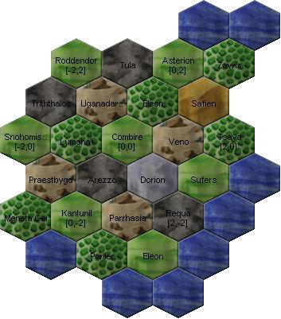

Diese Einführung ist eher für völlig neue Spieler gedacht, die noch nie Atlantis-basierte Spiele gespielt haben. Für die erfahreneren Spieler empfehlen wir den Vergleich zu anderen PbEMs.
Allanon ist ein rundenbasiertes Spiel, dem eine Fantasiewelt zugrunde liegt. Die Technologie ist etwa auf dem Stand des späten Mittelalters auf der Erde. Es gibt jedoch auch einige Unterschiede:
Natürlich sind auch für das Mittelalter typische Berufsgruppen vertreten, wie die Bauern. Sie machen den Großteil der Bevölkerung aus und werden vom Spiel automatisch gesteuert.
Der Spieler steuert in dieser Welt eine Partei, also beispielsweise ein Stamm, ein Königreich oder ein Imperium. Der Name ist egal, da das Prinzip immer dasselbe ist: Der Spieler kann jedem Angehörigen seiner Partei Befehle erteilen, die dann in der nächsten Runde nach besten Kräften ausgeführt werden. Die Bauernbevölkerung kann vom Spieler nicht direkt gesteuert werden. Statt dessen kann er sie durch Steuereintreiber, Gaukler, militärische Einheiten, Händler etc. beeinflussen.
Der Begriff Einheit bezeichnet zunächst keine militärische Einheit, sondern einfach eine oder mehrere Personen und ihren Besitz. Jede Einheit gehört zu einer Partei. Alle Personen einer Einheit haben dieselben Talente und teilen sich alle Besitztümer. Eine Einheit handelt immer gemeinsam, d.h. alle Personen tun zur gleichen Zeit immer dasselbe.
Beispiele für Einheiten sind:
Wie bereits oben gesagt, könnte die "3. Kohorte von Skara" nicht gleichzeitig nach Osten und nach Westen laufen. Statt dessen müßte der Spieler eine neue (sozusagen "leere") Einheit erschaffen und von der alten Einheit Personen und Waffen transferieren. Dann erst könnte die alte Einheit nach Osten und die neue nach Westen laufen.
Das hier ist ein Beispiel für zwei Einheitenbeschreibungen, wie sie in der Auswertung vorkommen:
* Ingmar Eiszapfen (f4vq), Die Eisriesen (L33t), 1 Riese, aggressiv,
$171, Talente: Hiebwaffen 3 [180], Steinbau 6 [450], Tarnung 1 [90],
Wahrnehmung 6 [690], hat: 1 Steinkeule, 1 Kettenhemd, Default:
"lerne wahrnehmung ";
Ingmar ist der Verwalter dieser Region und nur
seinem Anführer Rechenschaft schuldig.
- Celdor (452s), Carnosia (carn), 100 Elfen, hat: 100 Elfenbögen,
100 Kettenhemden; Die Celdor-Schutztruppen der Carnosia beschützen
ihren Verbündeten Ingmar Eiszapfen vor Angriffen.
Zerlegen wir diese Beschreibung doch einmal in ihre Einzelteile. Zunächst einmal werden die Einheiten durch einen Stern markiert, sofern sie zur eigenen Partei gehören, und mit einem Strich, falls sie einer fremden Partei angehören. Wie man sieht, ist die Beschreibung der eigenen Einheit ("Ingmar Eiszapfen") wesentlich ausführlicher als die der parteifremden Einheit.
Eine Einheitenbeschreibung enthält im Wesentlichen folgende Bestandteile (im Klammern die jeweiligen Werte unserer Beispieleinheiten):
Man startet das Spiel mit einer einzelnen Einheit, die aus einer Person besteht (viele Spieler machen diese zum "Anführer"). Diese muss dann alle anderen rekrutieren und so die Partei aufbauen.
 Rechts sieht man ein Beispiel einer Karte, wie sie im empfohlenen Client Magellan verwendet wird.
Die Welt von Allanon ist in viele Regionen unterteilt. Die Größe einer solchen Region ist nicht genau festgelegt, doch entspricht eine Region vielleicht einem Bundesland (es dauert im Spiel eine Runde (ca. 1 Monat) um eine Region zu Fuß zu durchqueren).
Jede Region hat bestimmte Eigenschaften. Das, was eine Region am meisten hervorhebt ist ihr Terrain. In Allanon gibt es eine Vielzahl von Terrains. Das häufigste vorkommende Terrain ist Ozean. Weitere Terrains sind z.B. Ebene (auf der Karte einheitlich grün) Wald (helles grün mit dunklen Punkten). Die verschiedenen Terrains haben jeweils bestimmte Vor- und Nachteile, usw.
Version: $Id: einfuehrung.html 547 2006-01-20 00:41:59Z sirprize $